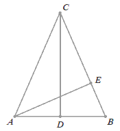

Matura 2013 listopad
Arkusz z zadaniami na stronie wydawnictwa
OPERON
Krótkie odpowiedzi do zadań znajdują się na końcu arkusza, który można pobrać ze strony wydawnictwa OPERON (link powyżej).
Krótkie odpowiedzi do zadań znajdują się na końcu arkusza, który można pobrać ze strony wydawnictwa OPERON (link powyżej).
Suma liczby odwrotnej do liczby \( -4\frac{3}{5} \) i liczby przeciwnej do liczby
\( \frac{18}{23} \) jest równa:
A.\(-1 \)
B.\(0 \)
C.\(\frac{21}{23} \)
D.\(1 \)
A
Wartość wyrażenia \( \frac{1}{2}\log_{3}\!15-\log_{3}\!\sqrt{5} \) jest równa:
A.\(-1 \)
B.\(\log_{3}\!3\sqrt{5} \)
C.\(\frac{1}{2} \)
D.\(1 \)
C
Suma przedziałów \( (-\infty ,-11)\cup (7,+\infty) \) jest zbiorem rozwiązań
nierówności:
A.\(|x+1|>10 \)
B.\(|x+2|>9 \)
C.\(|x-2|>11 \)
D.\(|x+1|\lt 10 \)
B
Niech \(k = 2 - 3\sqrt{2}\), zaś \(m = 1 - \sqrt{2}\). Wówczas wartość wyrażenia \(k^2 - 12m\) jest równa:
A.\( 21+12\sqrt{2} \)
B.\( 21-12\sqrt{2} \)
C.\( 10 \)
D.\( 34 \)
C
Liczba \(a\) stanowi \(40\%\) liczby \(b\). Wówczas:
A.\( b=0{,}4a \)
B.\( b=0{,}6a \)
C.\( b=2{,}5a \)
D.\( b=0{,}25a \)
C
Dziedziną funkcji \(f(x)=\frac{x+3}{x^3+4x}\) jest zbiór:
A.\( \mathbb{R} \backslash \{ -4,0 \} \)
B.\( \mathbb{R} \backslash \{ 0 \} \)
C.\( \mathbb{R} \)
D.\( \mathbb{R} \backslash \{ -2,0,2 \} \)
B
Proste o równaniach \(-3y - mx + 12 = 0\) oraz \(y = 6x - 12\) są prostopadłe dla \(m\) równego:
A.\( \frac{1}{2} \)
B.\( -18 \)
C.\( -\frac{1}{2} \)
D.\( 6 \)
A
Zbiorem wartości funkcji \(f(x) = -2(x + 3)(x - 4)\)
jest przedział:
A.\( \left ( -\infty , 24\frac{1}{2} \right \rangle \)
B.\( \left \langle -24\frac{1}{2},+\infty \right ) \)
C.\( \left \langle 24\frac{1}{2},+\infty \right ) \)
D.\( \left \langle -25\frac{1}{2},+\infty \right ) \)
A
Na wykresie przedstawiony jest trójmian \(y = ax^2 + bx + c\).  Wynika z tego, że:
Wynika z tego, że:
Wynika z tego, że: A.\( b\lt 0 \)
B.\( b>0 \)
C.\( b\le 0 \)
D.\( b\ge 0 \)
B
Wielomian \(W(x)\) jest stopnia czwartego. Pierwiastkiem dwukrotnym tego wielomianu
jest liczba \(-1\). Po rozłożeniu na czynniki wielomian ten może być postaci:
A.\( -2(x-1)^2(x^2+1) \)
B.\( (x+1)^2(x-4) \)
C.\( -(x+1)^2(x^2+3) \)
D.\( (x-1)(x+1)(x+2)(x-3) \)
C
Liczba różnych rozwiązań równania \(\frac{(x+3)(x^2-4)}{x^2+2x}=0\) wynosi:
A.\( 5 \)
B.\( 4 \)
C.\( 3 \)
D.\( 2 \)
D
Dana jest funkcja \(h(x)=\left ( -\frac{1}{3}m+2
\right)x+\frac{3}{2}m-1\). Funkcja ta dla argumentu \(0\) przyjmuje wartość \(5\).
Wówczas:
A.\( m=9 \)
B.\( m=6 \)
C.\( m=4 \)
D.\( m=2 \)
C
Ciąg \((b_n)\) określony jest wzorem \(b_n=(-1)^{2n+3}\cdot
(n+1)\). Suma dwóch pierwszych wyrazów tego ciągu jest równa:
A.\( -5 \)
B.\( -1 \)
C.\( 1 \)
D.\( 5 \)
A
W ciągu arytmetycznym piąty wyraz jest równy \(8\), zaś siódmy wyraz tego ciągu
jest równy \(14\). Dziesiąty wyraz tego ciągu jest równy:
A.\( 21 \)
B.\( 23 \)
C.\( 24 \)
D.\( 3 \)
B
Pan Nowak wpłacił do banku \(k\) zł na procent składany. Oprocentowanie w tym banku
wynosi \(4\%\) w skali roku, a odsetki kapitalizuje się co pół roku. Po \(6\) latach oszczędzania
Pan Nowak zgromadzi na koncie kwotę:
A.\( k(1+0{,}02)^{12} \) zł
B.\( k(1+0{,}04)^{12} \) zł
C.\( k(1+0{,}02)^6 \) zł
D.\( k(1+0{,}4)^6 \) zł
A
W trójkącie równoramiennym \(ABC\) o wysokościach \(CD\) i \(AE\) podstawa \(AB\)
ma długość \(8\) cm, a odcinek \(BE\) ma długość \(3\) cm.  Długość odcinka \(AC\) jest równa:
A.\( 6 \) cm
B.\( \frac{32}{3} \) cm
C.\( \frac{28}{3} \) cm
D.\( \frac{33}{2} \) cm
B
W czworokącie \(OBMA\) kąty wewnętrzne \(AOB\) i \(AMB\) mają równe miary.  Wówczas kąt \(\alpha \) ma miarę:
Wówczas kąt \(\alpha \) ma miarę:
Wówczas kąt \(\alpha \) ma miarę:
A.\( 160^\circ \)
B.\( 120^\circ \)
C.\( 240^\circ \)
D.\( 210^\circ \)
C
W trójkącie prostokątnym długość jednej z przyprostokątnych jest równa \(7\), zaś
długość przeciwprostokątnej jest równa \(8\). Zatem tangens mniejszego kąta ostrego w tym trójkącie
jest równy:
A.\( \frac{15}{7} \)
B.\( \frac{8}{15} \)
C.\( \frac{\sqrt{15}}{7} \)
D.\( \frac{7\sqrt{15}}{15} \)
C
Długość odcinka \(BD\) w trójkącie prostokątnym \(ABC\) jest równa: 
A.\( \frac{9\sqrt{3}}{4} \)
B.\( 4 \)
C.\( 4\sqrt{3} \)
D.\( 4\sqrt{2} \)
B
Pole koła wpisanego w trójkąt równoboczny jest równe \(\frac{16}{3}\pi \). Obwód
tego trójkąta jest równy:
A.\( 12\sqrt{3} \)
B.\( 24 \)
C.\( 12 \)
D.\( 36 \)
B
Długość okręgu opisanego równaniem \(x^2-4x+y^2-4=0\)
jest równa:
A.\( 4\sqrt{2}\pi \)
B.\( 4\pi \)
C.\( 2\sqrt{2}\pi \)
D.\( 8\sqrt{2}\pi \)
A
Punkty \(A=(-2,4)\) i \(C=(-6,2)\) są przeciwległymi wierzchołkami kwadratu \(ABCD\). Zatem
promień okręgu opisanego na tym kwadracie jest równy:
A.\( 10 \)
B.\( 2 \)
C.\( \sqrt{5} \)
D.\( \sqrt{10} \)
C
Ze zbioru liczb \(\{1,2,3,4,6,8,12,14,15\}\) wybieramy
losowo jedną liczbę. Prawdopodobieństwo, że wybierzemy liczbę, której dzielnikiem jest liczba \(3\),
wynosi:
A.\( \frac{5}{9} \)
B.\( \frac{4}{9} \)
C.\( \frac{1}{3} \)
D.\( \frac{2}{3} \)
B
W ostrosłupie prawidłowym czworokątnym objętość jest równa \(32\), zaś krawędź
podstawy jest równa \(4\). Wysokość tego ostrosłupa jest równa:
A.\( \frac{2}{3} \)
B.\( \frac{4}{3} \)
C.\( 2 \)
D.\( 6 \)
D
Rozwiąż nierówność: \(-2x^2+3x\lt 4\).
\(x\in \mathbb{R} \)
Dany jest wielomian \(W(x)=-2x^3+3x^2-(k+2)x-6\). Wyznacz wartość \(k\), wiedząc,
że liczba \(-2\) jest pierwiastkiem wielomianu \(W(x)\).
\(k=-13\)
Wykaż, że trapez, w którym przekątne dzielą kąty przy dłuższej podstawie na połowy,
jest równoramienny.
Maszt telekomunikacyjny rzuca cień, który jest \(2\) razy krótszy niż wysokość
masztu. Oblicz cosinus kąta, pod jakim padają promienie słoneczne.
\(\cos \alpha =\frac{\sqrt{5}}{5}\)
Dwa okręgi są styczne zewnętrznie. Odległość ich środków jest równa \(8\) cm. Gdyby
te okręgi były styczne wewnętrznie, to odległość ich środków byłaby równa \(2\) cm. Oblicz długości
promieni tych okręgów.
\(r_1=5\), \(r_2=3\)
Dany jest trójkąt \(ABC\), gdzie \(A=(-3,-2)\), \(B=(1,-1)\), \(C=(-1,4)\). Wyznacz
równanie symetralnej boku \(AC\) tego trójkąta.
\(y=-\frac{1}{3}x+\frac{1}{3}\)
Uczeń przygotowujący się do matury w ciągu pierwszego tygodnia rozwiązał \(5\)
zadań. Postanowił jednak, że w każdym następnym tygodniu będzie rozwiązywał o \(2\) zadania więcej
niż w poprzednim tygodniu. W którym tygodniu liczba zadań rozwiązanych przez niego od początku nauki
przekroczy \(480\)?
\(21\)
W graniastosłupie prawidłowym czworokątnym wysokość graniastosłupa jest o \(4\)
krótsza od przekątnej podstawy i o \(8\) krótsza od przekątnej graniastosłupa. Oblicz sinus kąta
pomiędzy przekątną graniastosłupa a płaszczyzną podstawy.
\(\sin \alpha =\frac{3}{5}\)
Ojciec i syn zbierają jabłka. Razem zebranie wszystkich jabłek zajęło im \(6\)
godzin. Gdyby ojciec zbierał jabłka sam, to zajęłoby mu to o \(5\) godzin mniej, niż gdyby zbierał
je sam jego syn. W jakim czasie ojciec sam zebrałby wszystkie jabłka?
w \(10\) godzin